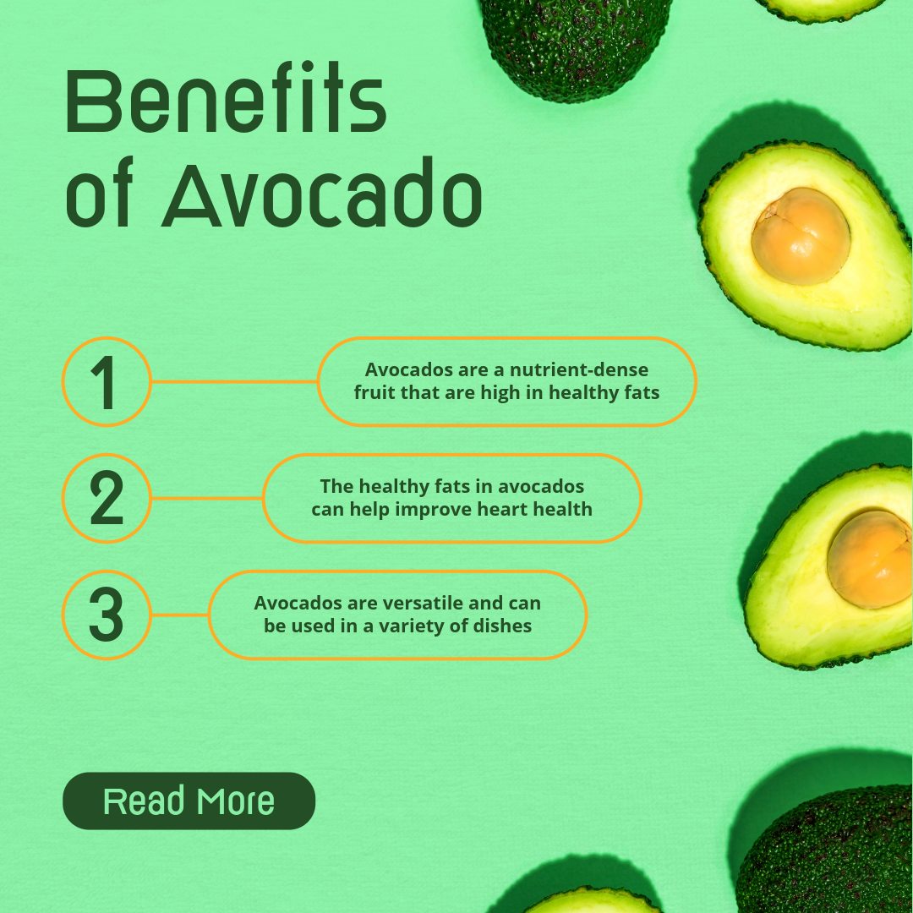

Welcome to the News

The Benefits of Avocados
Step aside, boring berries! The avocado revolution is here, and it's packed with creamy goodness and a health punch that'll have you feeling like a superhero. Not only are they like tiny, green butter bombs that elevate any dish, but they're also loaded with healthy fats, vitamins, and minerals. Imagine this: a single avocado can boost your heart health, keep your skin glowing, and even give your brain a power-up! It's like a party in your mouth with a side of awesome for your body. So, ditch the bland and embrace the brilliant world of avocados – your taste buds and your body will thank you!

Health Hero: Avocados are nature's gift to your body. They're packed with healthy monounsaturated fats, which help lower bad cholesterol and improve heart health. Plus, they're a great source of fiber, keeping you feeling full and aiding digestion. Vitamins and minerals like potassium and folate join the party, boosting your overall well-being.
Sustainable Superstar: Compared to some other fruits, avocados require less water to grow, making them a more sustainable choice. Additionally, avocado trees provide habitats for wildlife and help prevent soil erosion. Responsible sourcing ensures the long-term health of avocado groves.
Keto King: Rejoice, keto followers! Avocados are your new best friend. They're incredibly low in net carbs while being rich in healthy fats, perfectly aligning with the keto diet's goals. This translates to sustained energy levels and feeling satisfied without derailing your ketosis. Plus, avocados add a delightful creaminess to your keto meals, preventing them from becoming bland or boring.